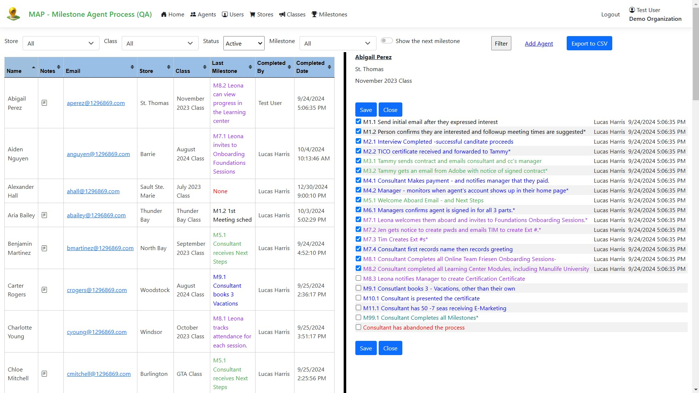
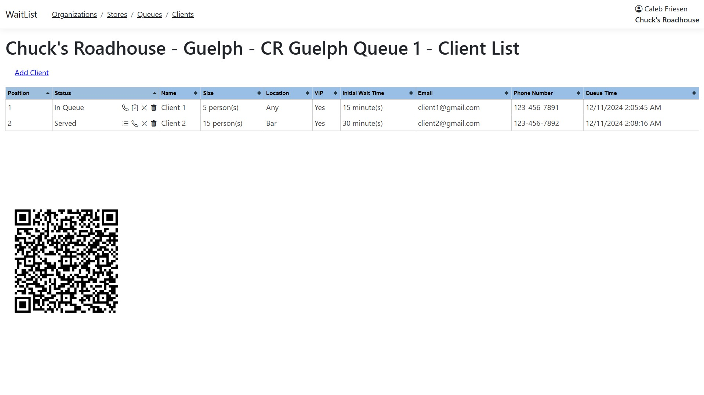
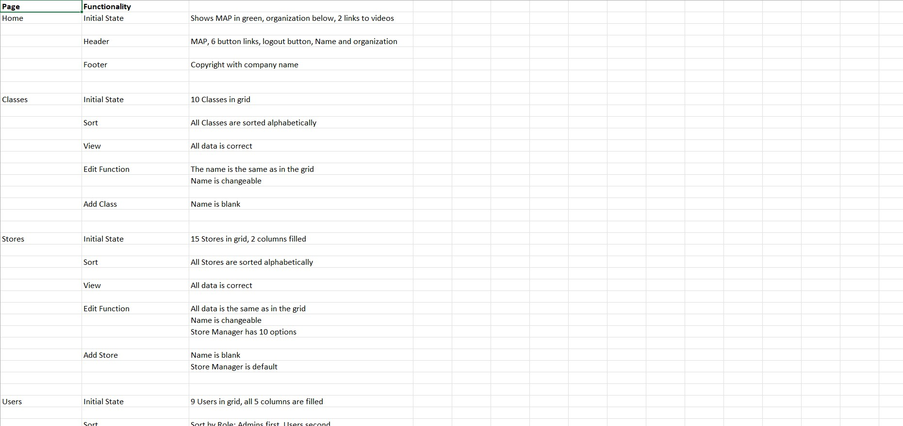

About My Employer
Over the past 8 months, I had the opportunity to work for 1296869 Ontario Limited, which was rebranded as JME Consulting. Established in 1998, the company has been doing custom software development for over 25 years, initially using the Microsoft development stack, and recently transitioning to the Microsoft Azure cloud environment. JME Consulting specializes in developing business applications for clients, employing a variety of tools such as C#, Microsoft DevOps, SQL, and other technologies.
My Job
In the first half of my 8-month work term, I learnt how to create web applications using Azure Table Storage (more information about that here). In the back half, I expanded on that knowledge, creating webpages for clients, and learning how to thoroughly test my app using test plans. I also learnt how to use Microsoft SQL Server and created web applications using it, through APIs and Stored Procedures.
My Goals
Goal #1
My first goal was to create a web application for a client. I began working on this application at the end of the previous semester, having only just started by that point. This project involved developing an application for Expedia Cruises to help them efficiently manage their travel agents from the initial stage all the way to completion of all their training and certifications. This project required me to collaborate with the client and discuss the necessary features. One of the key features developed was a checklist to track the travel agents’ progress through the company’s training milestones. The system would inform the person in charge of their next task about the completion to ensure a smooth workflow. Finally, I created a demo video to train administrators on how to use the website effectively, including how to add and edit data in the website’s database. Overall, I believe that I succeeded with this goal, as I was able to create a fully functioning web application that a company can use, while also gaining valuable experience in collaborating with a client, who is not in the technical field, to help bring their vision to life.
On the right is a screenshot of the checklist feature mentioned above. It includes all of the training milestones, it is color-coded to represent the person in charge of that task, it shows the timestamp of when a task was completed, and a "*" represent a milestone that would send an email upon completion. Note: all names were randomly generated, the full website (used for testing) can be found here. You can login to look at the site using test@test.com as the email and testing as the password.

Goal #2
My second goal was to create an application using Microsoft SQL Server. The past two terms have mostly been focused on using Azure Data Storage to store data, however for this project, I used Microsoft SQL as the data storage solution. This project that I worked on was an application that would track the waitlist at a restaurant. While working on the project, I learnt about SQL stored procedures, which is SQL code that can be saved in order to reuse. I utilized stored procedures in several ways: to display clients associated with the correct store on its page, to filter each client, and to select a specific client. Overall, I believe that I succeeded with this goal, as I gained a deeper understanding of the functionality of Microsoft SQL Server, and the advantages that it has over Azure Data Storage. This allowed me to expand my technical skills, and showed me the benefits of using the SQL server solution in real-world applications.
On the right is a screenshot of the clients page of the project I mentioned above. It shows all of the clients' info, and if you want to change their status, you can click on one of the icons in the status column. In the header, I used breadcrumb navigate so that the user can move through each page easily, while also keeping track of where they are in the webpage. The webpage created can be viewed here. You can login to check out the site using test@test.com as the email and testing as the password.

Goal #3
My final goal was to learn how to create a test plan for a web application, ensuring that the entire application is thoroughly tested to catch all potential errors. While working on the web application for Expedia Cruises, every time I added a new feature, or fixed a bug, I needed to test the entire application, as any error in the application could negatively impact the user experience and limit the functionality of the app. For this project, I developed a test plan that ran through every single page and feature using specific test values to ensure that everything functions properly. I quickly realized the importance of test plans as there were several times where the newly added feature would inadvertently break a different feature, an issue that would have gone unnoticed had I not run through everything. Overall, I believe that I met this goal, as I now have a deeper understanding of test plans, how they work, and their importance when creating web applications.
On the right is part of the test plan used to test the program used for Expedia Cruises. It includes the page and the functionality that needs testing, and what needs to be checked to confirm its functionality.

Final Thoughts and Reflection
These 8 months I spent working with JME Consulting have been a really great experience. I got to learn about creating webpages using razor pages, I got to learn about creating webpages for client, who may not have much technical knowledge, and I also got to learn how to program using languages such as C#, HTML, SQL, and many more. Finally, I learnt about the importance of creating testplans to thoroughly test your code, as one small change can unknowingly break other parts of you program. Overall, these last 8 months have helped me improve my technical skills as a software engineer, and has allowed be to gain valuable work experience that I hope to use in the future. Thank you JME Consulting for allowing me to be part of your team for the last 8 months, and I am excited for future co-op opportunities to come!